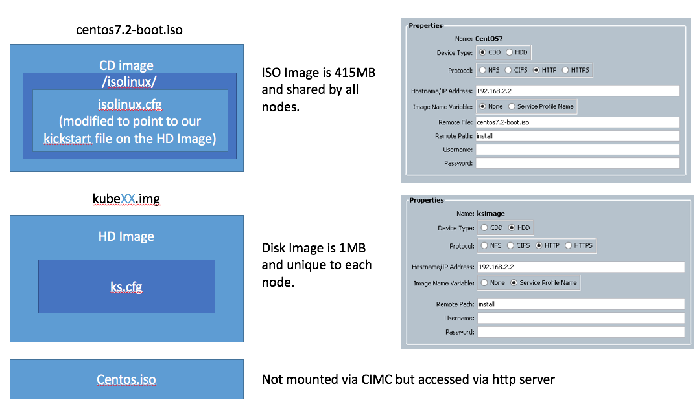

RedHat vMedia Installation
Date: April 20, 2017 Author: @vallard
This past week I learned about the vmedia policy that has been in UCS since the 2.2(2c). What is great about this is it gives us a way to automate server installations without using IPXE.
I'm a huge fan of PXE booting and I've been doing it for muchos años. We used to use gPXE and then moved on to IPXE with the rest of the industry. In fact I still love it today. I even wrote a lot of code in xCAT2 that would automate this for 1200+ bare metal clusters.
There are some things that suck about PXEbooting. And I run into this all the time, especially in Enterprise environments. PXEbooting requires DHCP, HTTP, TFTP, etc to all work in harmony. And usually things just aren't set up that way. You could make separate one off networks, but that kind of sucks.
vMedia policies give us a way to create an autmated installation of our servers without having to mess with the network. In this post we will outline how to use vMedia policies to create an automated environment to provision bare metal Red Hat and CentOS 7 installations. You will see that this is also part of what we use as we are building a way for Kubernetes to install stupid simple on UCS environments.
1. Prereqs
You will need a build server that runs nginx or some type of web server. This biuld server should be on the same network or some place where the nodes that are booting can get to.
- The easiest way to do this: Suppose each node has an IP address of 192.168.2.x/24. Then you can have a webserver on 192.168.2.2 that can have all your files. If possible make this OS the same OS that you are installing on the nodes.
- Alternatively you could just create an ISO image with all the packages you need and avoid using the network all together. This may not scale as well but may be just fine for you.
You will need an IP address for all the servers (we are using 192.168.2.x/24. The VLAN should already be set up for this to work in UCS and the appropriate networking.
Installation Media should be placed on the webserver in a place where it can be accessed. You should download this on your build server first. For CentOS you can grab it from places like here or here.
vMedia policies require M3 B-Series or C-Series at minimum. I had some old M1 and M2 UCS blades sitting around and unfortunately vMedia policies aren't supported on these blades. Don't fret: You can still use them and PXE works fine, but you can't use the vMedia policy to get around PXE.
A build server. We are using RedHat 7.3 but any RedHat derivative in the 7 range should work fine.
2. Create Images
We are going to create two images for bootstrapping the operating system:
ISOLINUX Boot ISO Image. This first image is the same for all nodes. We want it as small as possible so we're not using an entire giant image for this stage clogging up our network. Unfortunately, its still ~414MB so not as great as we would like. There may be some things we can do later to make it smaller, but this is what we are going with for now.
Kickstart Disk Image. We are also creating a unique disk image for each node so that it can have its own kickstart file and thus bring uniqueness to all our nodes.
We will also use the entire CentOS ISO image and place it in a directory on our webserver. So there are three parts here that need to be in place for this to all work. Please download an appropriate ISO file

2.1 Create the Boot ISO Image
Credit: Some of this information was gleaned from the help of the wonderful Internet
The Boot ISO image involves extracting the essential parts out of the installation media. We make a root directory on the build server to build from (kubm) and then put everything there.
mkdir -p /tmp/kubm # our working directory
mkdir -p /mnt
mount -o loop centos7.2.iso /mnt # this is the CentOS iso file we downloaded.
cd /tmp/kubm
cp -a /mnt/isolinux .
cp /mnt/.discinfo isolinux/
cp /mnt/.treeinfo isolinux/
cp -a /mnt/LiveCD isolinux/
cp -a /mnt/images isolinux/
chmod 664 isolinux/isolinux.bin
2.1.1 Edit isolinux.cfg
Now edit the isolinux/isolinux.cfg file and change the first label entry to look something like the below:
label linux
menu label ^Install CentOS Linux 7
menu default
kernel vmlinuz
append initrd=initrd.img inst.stage2=hd:LABEL=CentOS\x207\x20x86_64 inst.ks=hd:LABEL=KUBM:ks.cfg quiet
Really you should only need to change the append line and add the inst.ks line. This will make it automatic. You should also add the menu default line and delete it from the stanza that is below it so this comes up first.
You could also change the time out and all kinds of other things to make it go faster and install.
You'll notice that we are using the inst.ks=hd:LABEL=KUBM:ks.cfg. What this means is we are using the other remotely mounted image (that we're about to create) to make unique images for each of our nodes. This allows us to customize kickstart files individually for each node. You could instead put one kickstart file on this one file and have a go at it, but then every node would get the same kickstart file. This may be just fine but we want a bit more flexibility.
2.1.2 Build the ISO Image
Once you have everything in place its time to package this badboy up. The build commands for the RHEL or CentOS images differ slightly and two examples are written below. Be sure the -V flag matches what is in the isolinux.cfg file. Note: The isolinux.cfg file uses \x20 for spaces. You can just use spaces below.
2.1.2.1 RedHat 7.3
For RedHat your command may look as follows:
mkisofs -o /tmp/redhat7.3-boot.iso -b isolinux.bin \
-c boot.cat -no-emul-boot -V 'RHEL-7.3 Server.x86_64' \
-boot-load-size 4 -boot-info-table -r -J -v -T isolinux/
2.1.2.2 CentOS 7.2
For CentOS it might look something like the below:
mkisofs -o /tmp/centos7.2-boot.iso -b isolinux.bin \
-c boot.cat -no-emul-boot -V 'CentOS 7 x86_64' \
-boot-load-size 4 -boot-info-table -r -J -v -T isolinux/
Once you are done, you should have an iso image in the /tmp directory that can be used to boot.
2.2 Create the Kickstart Images
2.2.1 Kickstart File
Creating Kickstart files is an iterative process and can be quite time consuming. Download pykickstart so that you can validate your file is correct.
yum -y install pykickstart
The kickstart file will be unique for each node as we configure basic networking in the file and then give each node the installation media to get via http.
2.2.1.1 Basic Kickstart File
The below kickstart file will get you started. Substitute the IP addresses for your own.
#version=DEVEL
# System authorization information
auth --useshadow --enablemd5
# Install OS instead of upgrade
install
# Use network installation
url --url="http://192.168.2.2/install/centos7.2"
# Use graphical install
graphical
# Firewall configuration
firewall --disabled
firstboot --disable
ignoredisk --only-use=sdb,sda
# Keyboard layouts
keyboard --vckeymap=us --xlayouts='us'
# System language
lang en_US.UTF-8
# Network information
#network --bootproto=dhcp --device=enp6s0 --ipv6=auto --activate
network --activate --bootproto=static --ip=192.168.2.213 --netmask=255.255.255.0 --gateway=192.168.2.2 --nameserver=192.168.2.2
network --bootproto=dhcp --device=enp7s0 --onboot=off --ipv6=auto
network --hostname=kube01
# Reboot after installation if you want. We leave this to not reboot so we can
# reboot
# Root password
rootpw --iscrypted $6$KVZvCsW9P.08qpM7$Yx1KnYmjxhiFcr99ocdpZYDb4MpJb6VEeZO7wrb/XRlaKfJsLkrYpy1oJLJqxbqWJQPqTAb.y.WOWV/dXjDAf0
# SELinux configuration (make things super secure...)
selinux --disabled
# System services
services --enabled="chronyd"
# System timezone
timezone US/Pacific
# System bootloader configuration
bootloader --append=" crashkernel=auto" --location=mbr --boot-drive=sda
autopart --type=lvm
# Partition clearing information
clearpart --all --initlabel
%packages
@^minimal
%end
%post
#---- Install our SSH key ----
mkdir -m0700 /root/.ssh/
cat <<EOF >/root/.ssh/authorized_keys
ssh-rsa AAAAB3NzaC1yc2EAAAABIwAAAQEA5xwR+1+0sBwa0wME6maFjXjIdxUS9taPOgpf1c1EJUgZENDUUOdOabDbEZ6w/xLvx7vHtYDMMTzbyKif9O5hfgQ4RXNjMIMhu+PgShfCsUCFyhMF+cKZNeg2fUZn83r9oWWcFfL31Qh8PMe3yHV30fmBUwpqdCiUCrLznefVwsIlBcnr0DaScU2TdfY73sFR69K6bBJ80GYryaQi2v2s7cjZl2sDMuv5tDNmiOZCxtDJpRS4oaILnRh0gPQaYem0Hl2AGsETsYzqbXsvKkKd96hUtKmoDQ/voHaqFvB6/don12BFQDkTtCGqOCkga7JIGWhAdZbD3+owvOPaPAvK7Q==
EOF
### set permissions
chmod 0600 /root/.ssh/authorized_keys
### fix up selinux context if you are using it.
#restorecon -R /root/.ssh/
%end
A few notes:
- Password use the following to encrypt a password:
python -c 'import crypt,getpass;pw=getpass.getpass();print(crypt.crypt(pw) if (pw==getpass.getpass("Confirm: ")) else exit())' - Update the Timezone, keyboard, and partitioning information how you want.
- For the
%postsection we've included our public key so we could log into this from the build server without passwords. - You can go crazy with all the customizations in this. This is where I spend the most time. Testing on Virtual Box is a good way to make this faster. Waiting for UCS servers to boot up are not a good use of your time.
- Docs are available here for all command options as well as package selections.
2.2.2 Creating the Kickstart Image
To mount this kickstart file as a CIMC HD image we need to embed our ks.cfg file into each image.
Using some helpful hints from the Internet we can do this as follows:
mkdir -p /tmp/kubm/kube01
cd /tmp/kubm/kube01
fallocate -l 1M kube01.img
dd if=/dev/zero of=kube01.img bs=1M count=1
mkfs -t ext4 kube01.img # select y to proceed anyway
mkdir mnt
mount -o loop kube01.img mnt
cp <kickstartfile location>/ks.cfg mnt/
umount mnt
e2label kube01.img KUBM # note: This must match what was placed in the isolinux.cfg file.
blkid kube01.img # test to see the label is there.
Now copy this file to the webserver directory and test.
2.3 Verify Images
You should now have a webserver that contains at the very least 3 images:
- Kickstart images (unique per node) and named after the service profile. So if the service profile is named
kube01the image should be namedkube01.img - Boot media. One file this should be something like
centos7.3-boot.isoand should be a small file. - Installation Media. This is just the CentOS iso image unextracted sitting here to be installed and is referenced from your kickstart file.
Be sure that you can curl or wget these files from the location you expect.
3 UCS vMedia Policies
When you have the ISO images ready, its time to create the vMedia policy that the service profile will use to boot. This can be done from the GUI by creating the policies as shown in the picture near the beginning of this post.
Programmatically, we can use the UCS Python SDK and accomplish the same thing:
def createKubeVirtualMedia(handle):
print "Adding Virtual Media Policy"
from ucsmsdk.mometa.cimcvmedia.CimcvmediaMountConfigPolicy import CimcvmediaMountConfigPolicy
from ucsmsdk.mometa.cimcvmedia.CimcvmediaConfigMountEntry import CimcvmediaConfigMountEntry
mo = CimcvmediaMountConfigPolicy(name="kube",
retry_on_mount_fail="yes",
parent_mo_or_dn="org-root",
policy_owner="local",
descr="Kubernetes Boot Media")
mo_1 = CimcvmediaConfigMountEntry(parent_mo_or_dn=mo,
mapping_name="CentOS7",
device_type="cdd",
mount_protocol="http",
remote_ip_address="192.168.2.2",
image_name_variable="none",
image_file_name="centos7.2.iso",
image_path="install")
mo_2 = CimcvmediaConfigMountEntry(parent_mo_or_dn=mo,
mapping_name="kickstartImage",
device_type="hdd",
mount_protocol="http",
remote_ip_address="192.168.2.2",
image_name_variable="service-profile-name",
image_path="install")
handle.add_mo(mo, modify_present=True)
try:
handle.commit()
except UcsException as err:
if err.error_code == "103":
print "\talready exists"
Notice in my example above, the http server will serve files from http://192.168.2.2/install/centos7.2.iso and http://192.168.2.2/service_profile_name
4. Boot Policy
Now that you have a vMedia Policy you need to create a boot policy and attach it to a service profile that has the order:
- Boot from Local Disk
- Boot from Remote CIMC CDD
Installing that and all should work. Please note that whenever you change the ISO image, the vmedia policy may still be using the old mounted ISO. You might want to change names to ensure the ISO you think is loading is actually loading.
Troubleshooting
There are a ton of moving parts with this setup so it is very easy to make mistakes! Don't worry, you are still a good person and you are still very smart.
If boot fails it may drop you emergency shell. From here you can see what happened.
If you got the kickstart file successfully then you should see it in /etc/cmdline.d/80-kickstart.conf
You should also be able to tell in the /run/initramfs/rdsosreport.txt. This can tell you information like if the kickstart file wasn't found.
A few other mistakes made while creating this was: The wrong kickstart file location, not creating the boot ISO in the right location. When the ISO is created isolinux.cfg should be in the root directory of the disk.
Hit me up on twitter if you have any issues with this. I'd love feedback.
Additional Information
This section is left as reference only but not required for making the above sections all work. It is only here if further customizations are required, which I have found are not necessary at this point but may be in the future.
Modify the initrd
You probably don't need to do this but reference is here if you need to add something to the initrd.
Extract the initrd
xz -dc < initrd.img | cpio --quiet -i --make-directories
Create a non valid symbolic link in the /dev device in this directory.
ln -s sr1 cdrom1
Pack it back up.
find . 2>/dev/null | cpio --quiet -c -o | xz -9 --format=lzma >../initrd.img.new
Then you can place this initrd in the isolinux directory.